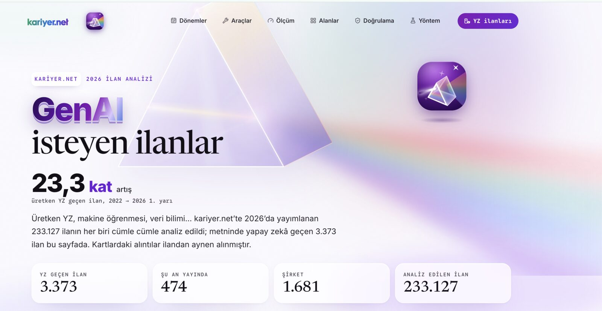
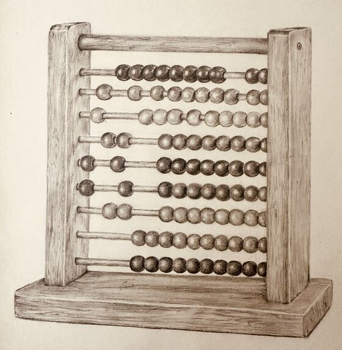

Reading people
Turkish native, English C1, Spanish at teaching level, Portuguese and Japanese on the way. Living in several languages taught me that meaning sits in context, not in the words.
Clear. Measured. Shipped.
I turn messy information into AI tools teams actually use, from the first conversation to the day it ships, with the numbers to prove it worked.
Checking our time zones…
Pick a slot on my calendar30 min · instant confirmation Best fitIstanbul --:-- · You --:--
Recruiter view
Senior Applied AI Specialist, Kariyer.net (ilab group) · 8 years in industry + 4 in research
Share this view: vfaraji89.github.io/?hire
Enterprise solutions you can count on.
Built with, every daySix layers: Guardrails and Governance, Evaluation and Observability, Orchestration, Caching, Memory, and Retrieval. Includes a live tool index, equations, a dictionary and research for enterprise AI architects.
Problems I solved end to end.

1 / 2Confidential Kariyer.net work, shown here as a concept only. Screens and figures illustrate the approach; no data, link or product is public.
Savings modelled as 31 pricing runs × (2h − 10min) + 4 intake requests × (30min − 5min). The 2h manual baseline is a team estimate from 2026-07-30, not a measurement.
Peer-reviewed and cited.
Eight years of turning business problems into systems people use.
I lead applied AI across Sales, Finance and R&D: from the business problem to agents running in production.
I built the data foundation the AI work now stands on.
I gave leadership numbers they could plan with.
I built a data product from zero: labour-market and compensation analytics.
Three ways teams bring me in.
Agent systems that survive production.
Architecture review before the spend.
400+ people trained, 50+ courses.
The short version, in numbers.
8 years in industry and 4 in research, turning messy data into decisions people act on.

Messy text in,
decisions out.
Twelve years, eight in industry and four in research, on one problem shape. The domain keeps changing. The problem doesn’t.
Turkish native, English C1, Spanish at teaching level, Portuguese and Japanese on the way. Living in several languages taught me that meaning sits in context, not in the words.
Defaro.io, then Kariyer.net: 300M+ assets under one metadata layer, with governance and lineage. A number is only as good as the trail behind it, so I built the trail.
Agents that map job titles in any language to O*NET and ESCO, a Turkish skill-extraction benchmark, Tokalator for the context budget. The model reads the language; the system keeps the lineage.
Same problem, a new reader. Languages taught me to read people, data products taught me to keep the evidence, and applied AI lets both run at scale.
How organisations actually run, and where their decisions get stuck.
Measurement and evidence. What separates a defensible number from a convenient one.
Built a data product end to end, from raw signal to something customers paid for. Incubated at Özyeğin University.
Thesis on real-time labour market analysis. Teaching assistant in econometrics.
300M+ assets under one metadata architecture. Governance, lineage, real-time pipelines.
Multi-agent systems that turn free text into structured decisions. Peer-reviewed at ACM CAIS '26.
The person behind the systems.